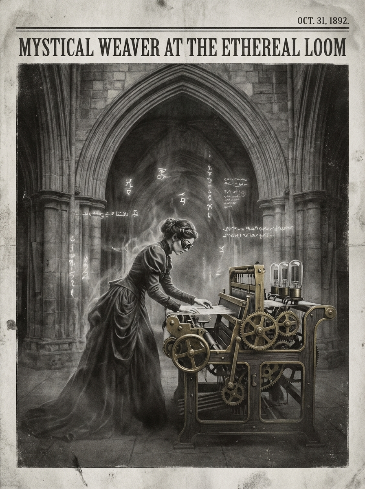

Morning Edition
6:00 AM CSTMarkets & Finance
Oil Surges as IEA Announces Reserve Release
Crude prices jumped above $91/barrel as the Iran conflict entered its second week. The IEA announced plans to release 400 million barrels from strategic reserves to stabilize global energy markets. West Texas Intermediate futures traded 4.5% higher at $91.20 per barrel as the Strait of Hormuz remains effectively closed.
— Source: CNBC, TheStreet, InvestopediaMarkets Under Pressure
The Dow Jones Industrial Average fell as investors continued to eye developments in the US-Iran conflict. Inflation expectations rose with the five-year breakeven rate increasing 10 basis points. Futures markets now imply reduced probability of rate cuts as energy costs threaten price stability.
— Source: Deloitte Insights, CNBCTech & AI
Thursday's Dev Wisdom
The fourth day arrives—momentum builds toward completion. Wednesday's pivot has turned, now push forward with clarity. Your code should flow like water through established channels. Refactor what needs refinement, but ship what's ready. Thursday is for making progress visible. Commit often, document well, and prepare for Friday's deployment.
— Source: Developer Horoscope Wisdom
The Code Weaver: Where Victorian Occult Meets the Digital Ether.
"Thursday is the builder's day—the time when vision crystallizes into structure. You've navigated the week's midpoint, now construct with intention. Every line of code is a brick in something greater. Don't just solve problems—build solutions that last. The best architectures emerge not from rushing, but from understanding deeply. Write code today that your future self will thank you for. Document your decisions, test your assumptions, and remember: clean code is a gift to everyone who comes after."— Developer's Thursday Wisdom
Sagittarius Horoscope
Thursday ignites your visionary spirit, Archer. With the Moon energizing your sector of expansion, your natural thirst for adventure finds an intellectual outlet today. That project you've been mapping in your mind? The stars say begin the journey. Your optimism isn't blind faith—it's informed intuition. A conversation with a colleague may reveal an unexpected opportunity for growth. Don't let restlessness scatter your focus; channel that fire into purposeful action. The week's end approaches—what legacy will you build before Friday arrives?
— Cosmic tip: Visionary energy, intellectual adventure, purposeful action, Mar 12, 2026World & US News
-
Day 12 of Iran Conflict:
Three more ships set afire by "unknown" projectiles in the Persian Gulf. Iran claims it hit Thai-flagged and Liberian-flagged vessels. The Strait of Hormuz remains effectively closed, threatening one-fifth of global oil supply.
-
Humanitarian Crisis Deepens:
Iran reports more than 1,300 civilians killed and nearly 10,000 civilian sites hit. Nearly 700,000 people displaced in Lebanon as Israeli bombing continues. Beirut suburbs struck overnight.
-
Global Response:
British police banned a pro-Iranian London march citing "extreme tensions." Russia remains in contact with Iranian leadership. Pope Leo lamented civilian deaths, calling the situation a "great trial."
-
Market Impact:
Oil prices continue climbing as IEA announces 400M barrel reserve release to counter supply disruption. Energy sector volatility expected to persist as conflict shows no signs of resolution.
Active Reminders
- Build Oomi iOS and Android app
- Plaid Integration Research
- Connect Nemu to Notion
- Research VPN/proxy services
- Create security OpenClaw bot